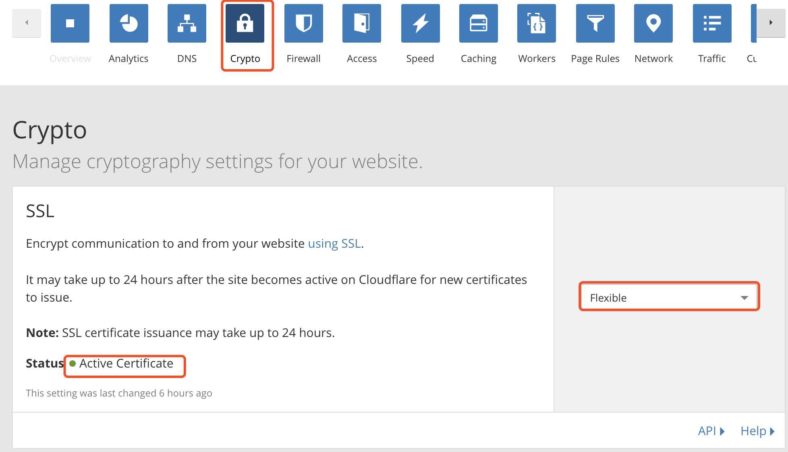

Why Https?
- http协议传输的数据都是未加密的。比如你访问某网站，在经过如路由器、宽带接入商等中间环节时，搜索的关键字、账号密码等都是可见的，因此使用http协议传输隐私信息是不安全的。为了保证这些隐私数据能加密传输，于是设计了ssl协议用于对http协议传输的数据进行加密，从而就诞生了https。
- 简单来说，https协议是由ssl+ http协议构建的可进行加密传输、身份认证的网络协议，比http协议安全性高。可以这样理解，网站的服务器产生一对密钥，公钥给用户用来加密，加密后发给服务端，服务端用自己的私钥解密后得到数据。这样即使中间环节劫持到内容也会因没有密钥无法破解。
- 在这个环节中，为了验证服务器是不是你所要访问的真实的服务器，就需要第三方来检验，这个第三方就叫CA(Certificate Authority，是数字证书认证中心的简称，作为独立的第三方，其职能是核实身份，保证获得证书的是被授权者本人而不是其他冒充机构)。ssl证书就是由第三方CA机构来颁发的。
Why CloudFlare?
首先，Github Pages并不支持自定义域名添加SSL证书，为此我还浪费了一个namecheap的SSL证书(；′⌒`)。所以之前都是”裸奔”的状态，直到我遇到了Cloudflare。
CloudFlare有什么优势呢？
- 免费
- CloudFlare 提供一种被他们称之为 Universal SSL 的服务，可以让任意 HTTP 站点支持 HTTPS。它的原理是当访客使用 HTTPS 访问站点的时候，从访客到 CloudFlare 这段是加密的，然后从 CloudFlare 到站点这段是明文的。虽然不是全程加密，但是也能很大程度上解决中间人，如果从 CloudFlare 到站点的信道相对可靠的话
所以我们牺牲了什么？
- 我们必须修改域名的DNS服务器为Cloudflare提供的地址才能使用这项服务
- 无法进行coding+github双线部署，除非你使用Cloudflare的收费服务
如何使用CloudFlare?
Step 1: 注册账号，添加网站
Step 2: 前往域名所在的网站，更改DNS服务器：
改好以后，大概等个十几分钟Status变成Active的状态，表示已经修改成功：
Step 3: 设置SSL
在rypto菜单下状态设置为Flexible，否则是不允许 CDN 通过 HTTP连接服务器的，配上以后浏览器才不会提示不安全：

待Status变为Active Certificate就说明已经完成认证，大概要等1个多小时吧。
Step 4：添加重定向规则
在Page Rule菜单下，添加如下两条：
OK! 大功告成！小绿锁就出现了(＾－＾)
如果是黄色叹号，查看下控制台的报错，可能是引入了一些第三方资源。